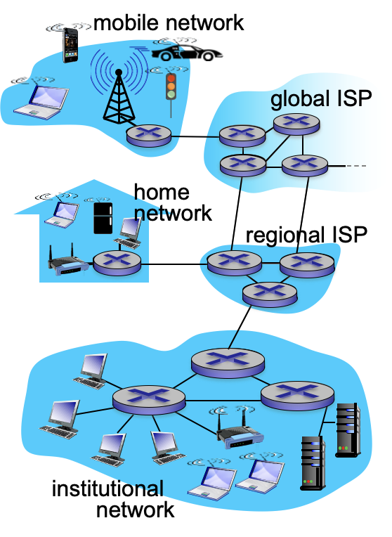
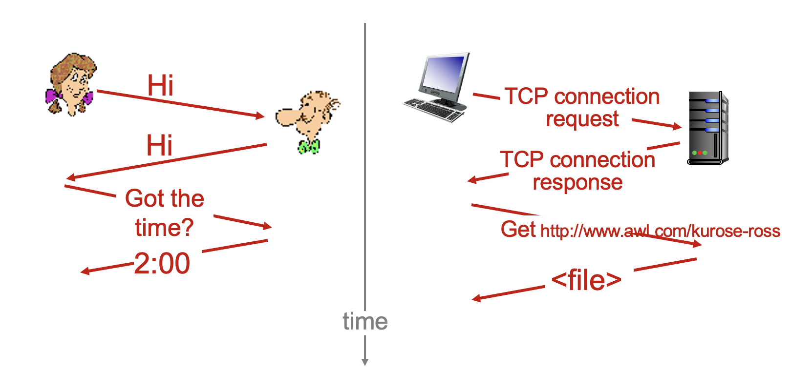
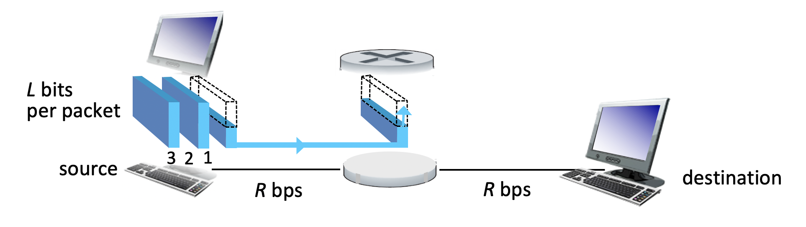
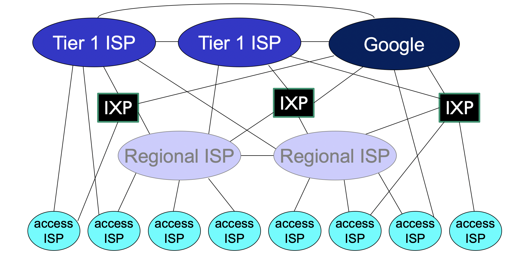
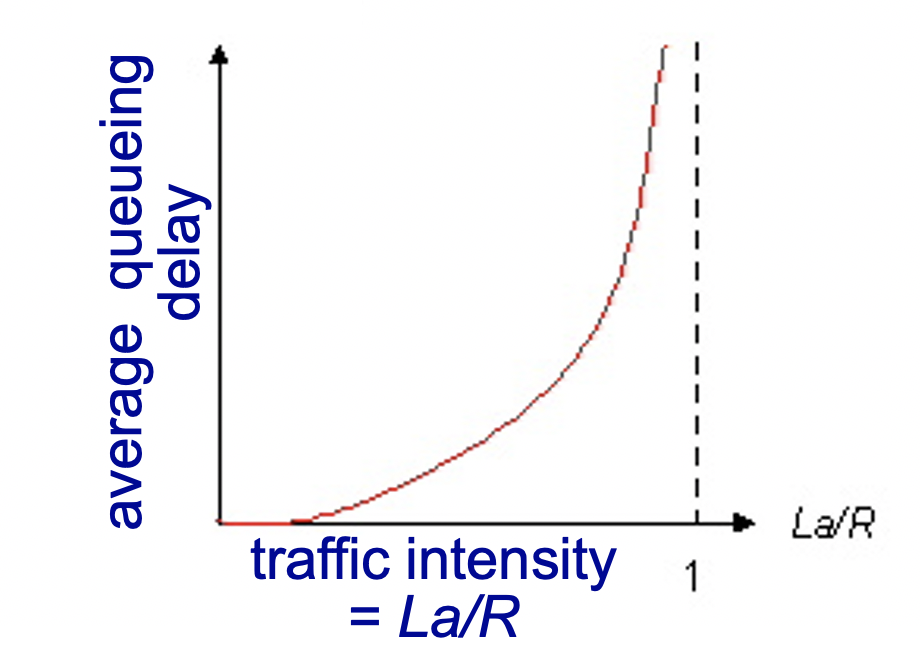
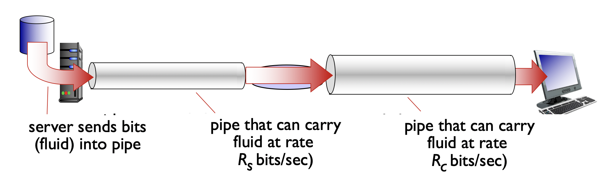
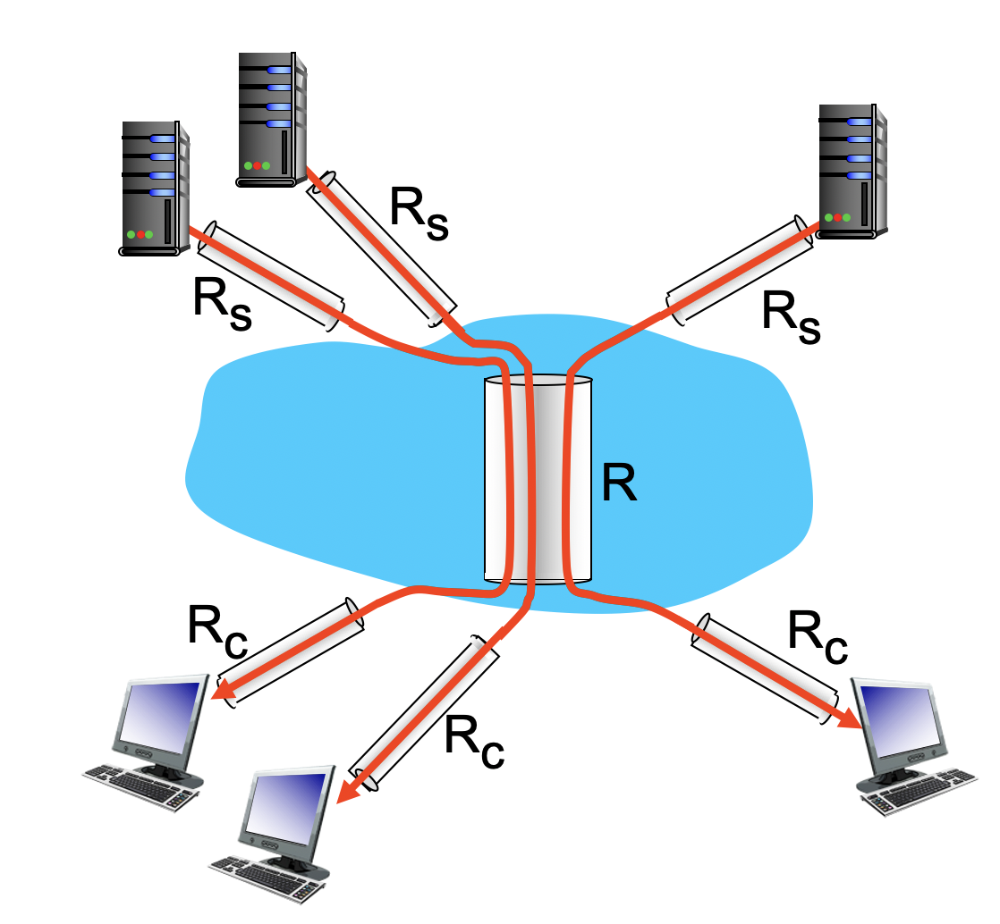
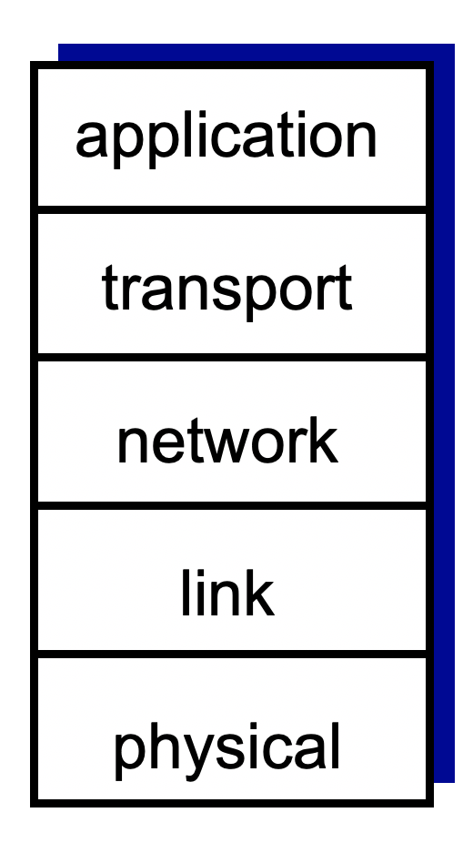
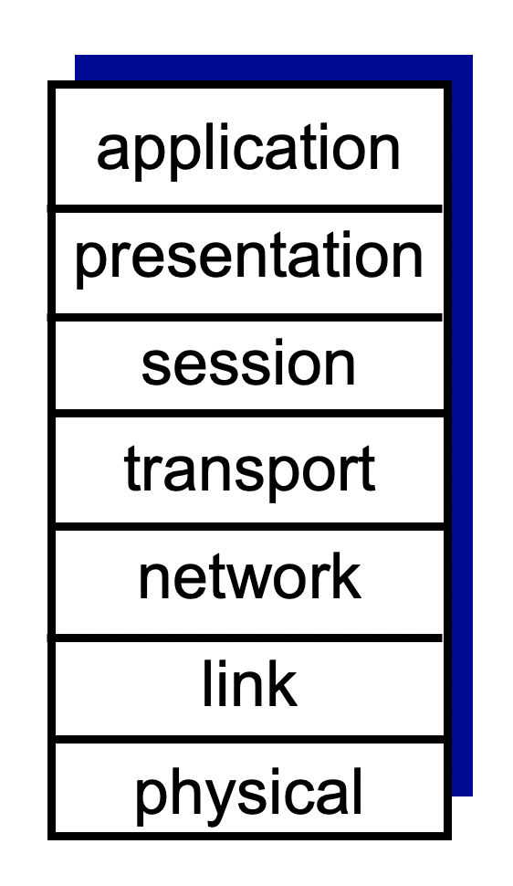

1.1 什么是因特网
1.1.1 具体描述构成
因特网是一个世界范围的计算机网络。

所有连接到因特网的设备称为主机（host）或端系统（end system）。端系统通过通信链路（communication link）和分组交换机（packet switch）连接到一起。
通信链路是物理媒体，包括同轴电缆、铜线、光纤和无线电频谱，不同链路的传输速率不同，以bit/s或bps即每秒传输的bit数来衡量。
当一台端系统向另一台端系统发送数据时，发送端将数据分段，并在每段加上首部字节，由此形成的信息包是分组（packet）。分组通过网络发送到目的端系统，然后被装配成原始数据。
分组交换机从入通信链路接收到达分组，从出通信链路转发该分组。分组交换机有路由器（router）和链路层交换机（link-layer switch）。路由器通常用于网络核心，链路层交换机用于接入网中。
从发送端到接收端系统，一个分组所经历的一系列通信链路和分组交换机称为通过该网络的路径（route或path）。
端系统通过因特网服务提供商（Internet Service Provider ISP）接入因特网。每个ISP是一个由多个分组交换机和多段通信链路组成的网络。ISP是互联的，底层的ISP通过国家的、国际的高层ISP互联起来，高层ISP由通过高速光纤链路互联的高速路由器组成。
端系统、分组交换机和其他因特网都要运行一系列协议（protocol），这些协议控制因特网中信息的接收和发送。TCP（Transmission Control Protocol 传输控制协议）和IP（Internet Protocol 网际协议）是因特网中两个最为重要的协议。
1.1.2 服务描述
从为应用程序提供服务的基础设施的角度来描述因特网，即将因特网描述为应用程序的平台。这些应用称为分布式应用程序（distributed application），因为他们涉及多台相互交换数据的端系统。
因特网应用程序运行在端系统上，他们并不运行在网络核心中的分组交换机，因此分组交换机虽然促进端系统之间的数据交换，但是他们并不关心作为数据的源或宿的应用程序。
与因特网相连的端系统提供了一个应用程序编程接口（Application Programming Interface API），该API规定了运行在一个端系统上的软件请求因特网基础设施向运行在另一个端系统上的特定目的地软件交付数据的方式。因特网API是一套发送软件必须遵循的规则集合。
1.1.3 什么是协议
在因特网中，凡是涉及两个或多个远程通信实体的所有活动都受协议的制约。
一个协议定义了在两个或多个通信实体之间交换的报文格式和次序，以及报文发送和/或接收一条报文或其他事件所采取的动作。

1.2 网络边缘
因特网的端系统包括桌面计算机、服务器、移动计算机和越来越多的非传统设备。
端系统也被称为主机，它们容纳应用程序，如Web浏览器程序，Web服务器程序等。
主机可以被进一步划分为两类：客户（client）和服务器（server）。客户即桌面PC、移动PC和智能手机等，服务器则是更强的机器，用于存储和发布Web页面、流视频、中继电子邮件。
1.2.1 接入网
接入网（access network）是指将端系统连接到边缘路由器（edge router）的物理链路。边缘路由器是端系统到任何其他远程端系统的路径上的第一台路由器。
- 家庭接入：DSL，电缆，FTTH，拨号和卫星
- 企业（和家庭）接入：以太网和WiFi
- 广域无线接入：3G和LTE
1.2.2 物理媒体
在网络中，一个bit从源到目的地传输时要经过一系列“传输器-接收器”对，对于每个传输器-接收器对，通过跨越一种物理媒体（physical medium）传播电磁波或光脉冲来发送该bit。
物理媒体有多种形式和形状，包括双绞铜线，同轴电缆，多模光纤缆，陆地无线电频谱和卫星无线电频谱。
物理媒体划分为：导引型媒体（guided media）和非导引型媒体（unguided ，media）。对于导引型媒体，电波沿着固体媒体前行，如光缆，双绞铜线或同轴电缆。对于非导引型媒体，电波在空气或外层空间中传播，如无线局域网或数字卫星频道。
- 双绞铜线
最便宜且使用最为普遍的引导性传输媒体。由两根隔离的铜线组成，以规则的螺旋形式排列。通常许多双绞线捆扎在一起形成一根电缆，并在外面覆盖上保护性防护层。一对电线构成一个通信链路。无屏蔽双绞线（Unshielded Twisted Pair UTP）常用在建筑物内的计算机网络中，即用于局域网（LAN）中。双绞线能达到10Gbps，最终已经作为高速LAN联网的主要方式。 - 同轴电缆
由两个铜导体组成，同心但不并行。借助这种结构和特殊的绝缘体和保护层，同轴电缆能够达到较高的数据传输速率。在电缆电视系统中相当普遍。电缆电视系统与电缆调制解调器结合，提供数十Mbps因特网接入。 - 光纤
光纤是一种细而柔软的、能够引导光脉冲的媒体。每一个脉冲表示一个bit，一根光纤能够支持较高的比特速率（数十甚至数百Gbps），且不受电磁干扰，光缆信号衰减极低，且很难窃听。光纤是长途引导型传输媒体，特别是跨海链路，广泛用于因特网的主干。高成本的光设备也阻碍光纤在短途运输中的应用。LAN或家庭接入网就不会使用。 - 陆地无线电信道
无线电信道承载电磁频谱中的信号。不需要安装物理线路，穿透墙壁、提供与移动用户连接以及长距离承载信号的能力。极大依赖于传播环境和传输信号的距离，有路径损耗、遮挡衰落和多径衰落以及干扰。个人设备如无线耳机、键盘跨短距离运行，无线LAN技术使用局域无线电信道，蜂窝接入技术使用了广域无线电信道。 - 卫星无线电信道
一颗通信卫星连接两个或多个位于地球的微波发射方/接收方，被称为地面站。该卫星在一个频段上接收传输，使用一个转发器再生信号，并在另一个频率上传输信号。
1.3 网络核心
网络核心即由互联因特网端系统的分组交换机和链路构成的网状网络。
1.3.1 分组交换
在各种网络应用中，端系统彼此交换报文（message）。报文能够包含协议设计者需要的任何东西。报文可以执行一种控制功能，也可以包含数据。
为了从源端系统向目的端系统发送一个报文，源将长报文划分为较小的数据块，称之为分组（packet）。在源和目的之间，每个分组都通过通信链路和分组交换机（packet switch）即路由器和链路层交换机来传送。
分组以等于该链路最大传输速率的速度传输通过通信链路。如果源端系统或者分组交换机经过一条链路发送一个L比特的分组，链路的传输速率为R比特/秒，则传输该分组的时间为L/R秒。
1. 存储转发传输
多数分组交换机在链路的输入端使用存储转发传输机制（store-and-forward transmission）。在交换机能够开始向输出链路传输该分组的第一个比特之前必须接收到整个分组。

源在0时刻传输，在时刻L/R路由器接收到整个分组，2L/R传输完整个分组。总时延2L/R
如果有N条速率为R的链路组成路径（源到目的之间有N-1台路由器），总时延NL/R
2. 排队时延和分组丢失
每个分组交换机有多条链路与之相连。对于每条相连的链路，该分组交换机具有一个输出缓存（output buffer）也称为输出队列（output queue），它用来存储路由器准备发往那条链路的分组。如果到达的分组需要传输到某条链路，但发现该条链路正忙于传输其他分组，则该分组必须在该输出缓存中等待。
因此除了存储转发时延，分组还要承受输出缓存的排队时延（queue delay）。排队时延是变化的，变化的程度取决于网络中的用塞程度。
缓存空间的大小是有限的，一个到达的分组如果发现缓存已经被占满，将出现分组丢失（packet lost丢包），到达的分组或已经参与排队的分组之一将被丢弃。
3. 转发表和路由选择协议
在因特网中每个端系统具有一个称为IP的地址，源主机向目的端系统发送一个分组时，源在该分组的首部包含了目的地的IP地址。
每台路由器具有一个转发表（forwarding table），用于将目的地址（或一部分）映射为输出链路。当某分组到达一台路由器时，路由器检查该地址，并用这个目的地址搜索其转发表，以发现适当的出链路，然后将该分组导向出链路。
路由选择协议（routing protocol）用于自动地设置这些转发表。
1.3.2 电路交换
通过网络链路和交换机移动数据有两种基本方法：电路交换（circuit switching）和分组交换（packet switching）。
在电路交换中，在端系统间通信会话期间，预留了端系统间通信沿路所需要的资源（缓存，链路传输速率）。在分组交换中，这些资源不是预留的。
例如电话网络。在发送方能够发送信息之前，该网络必须在发送方和接收方之间建立一条连接，沿着发送方和接收方路径上的交换机都将为该连接维护连接状态，该连接被称为一条电路（circuit），也在连接期间在该网络链路上预留恒定的传输速率（表示为每条链路传输容量的一部分）。
分组交换的性能优于电路交换的性能。提供了更好的带宽共享。
1.3.3 网络的网络
接入ISP是客户（customer），全球承载ISP时提供商（provider）。
区域ISP（reginal ISP），第一层ISP（tier-1 ISP），ISP互联，在等级结构基础上增加存在点（Point of Presence，PoP），多宿（multi-home），对等（peer）和因特网交换点（Internet exchange point，IXP）。
PoP存在于除了底层（接入ISP）等级之外的所有层次。一个PoP是提供商网络中的一台或多台路由器群组，其中客户ISP能够与提供商ISP连接，对于要与提供商PoP连接的客户网络，可以从第三方通信提供商租用高速链路直接将它的路由器之一连接到该PoP的一台路由器。
除第一层以外的任何ISP可以选择为多宿，即可以与两个或更多提供商ISP连接。当一个ISP多宿时，即使提供商之一出现故障，仍然能够发送和接收分组。
位于相同等级结构层次的邻近一对ISP能够对等，即能够直接将他们的网络连接到一起使他们的所有流量直接连接而不是通过上游的中间ISP传输，任一个ISP不向其对等收费。第三方公司创建一个因特网交换点IXP，多个ISP在这里共同对等。
内容提供商网络（content provider network）即服务器，数据中心。

1.4 分组交换网中的时延、丢包和吞吐量
1.4.1 分组交换网络中的时延概述
包括结点处理时延（nodal processing delay），排队时延（queuing delay）、传输时延（transmission delay）和传播时延（propagation delay），这些时延总体累加就是结点总时延）（total nodal delay）。
1. 处理时延：
检查分组首部和决定该分组导向何处所需要的时间，还包括比如检查比特级别的差错所需要的时间。高速路由器的处理时延通常是微秒甚至更低数量级。
2. 排队时延：
分组在链路上等待传输的时间。排队时延长度取决于先期到达的正在排队等待向链路传输的分组数量。实际排队时延可以是毫秒到微秒数量级。
3. 传输时延：
先到先服务方式传输时，仅当所有已经到达的分组被传输后才传输刚到达的分组。传输时延等于该分组的长度除以路由器A到B的链路传输速率，L/R，是路由器将所有分组的比特推向链路所需要的时间。实际传输时延通常在毫秒到微秒量级。
4. 传播时延：
一旦一个bit被推向链路，该bit需要向路由器B传播，从该链路的起点到路由器B所需要的时间是传播时延。该bit以该链路的传播速率传播，传播速率取决于链路的物理媒体（光纤，双绞铜线等），速率范围210^8 ~ 310^8m/s，等于或略小于光速。该传播时延等于路由器之间的距离除以传播速率，d/s。广域网中传播时延为毫秒量级。
5. 传输时延和传播时延的比较：
通过高速公路收费站和通过高速公路路段的区别。传输时延时路由器推出分组所需要的时间，是分组长度和链路传输速率的函数，与两台路由器之间的距离无关。另一方面，传播时延是一个比特从一台路由器向另一台路由器传播所需要的时间，是两台路由器之间距离的函数，与分组长度或链路传输速率无关。
1.4.2 排队时延和丢包
与其他三项不同，排队时延对不同的分组可能是不同的，排队时延的大小很大程度取决于流量到达该队列的速率、链路的传输速率和到达流量的性质。
a-分组到达队列的平均速率（分组/秒，pkt/s），R-传输速率，从队列中推出比特的速率（bps），L-每个分组包含L比特。比特到达队列的平均速率为La bps。La/R被称为流量强度（traffic intensity）。
如果La/R>1，则比特到达队列的平均速率超过从该队列传输出去的速率，该队列趋向于无界增加，排队时延趋向无穷大。流量工程的设计原则：设计系统时流量强度不能大于1！
如果La/R<=1，到达流量的性质影响排队时延。如果分组周期性到达，即L/R秒到达一个分组，则每个分组将到达一个空队列中，不会有排队时延。如果分组突发性到达，则有很大的排队时延。例如假定L/R秒同时到达N个分组，传输的第一个分组没有排队时延，第二个时延L/R，第n个时延(n-1)L/R。
实际上到达队列的过程通常是随机的，即到达并不遵循任何模式，分组之间的时间间隔是随机的。但还是可以通过La/R来描述流量强度和排队时延的关系。

流量强度接近于0时排队时延接近于0，随着流量强度接近于1，平均排队时延迅速增加，该强度少量的增加将导致时延大得多的增加。
在现实中，一条链路前的队列只有有限的容量，随着流量强度接近于1，排队时延并不实际趋向无穷大，而是到达的分组发现一个满的队列，由于没有地方存储这个分组，路由器将丢弃（drop）该分组，该分组将丢失（lost）。
从端系统的角度看，丢包现象看起来像是一个分组已经传输到网络核心但是却不会从网络发送到目的地。
1.4.3 端到端时延
假定源主机和目的主机之间有N-1台路由器，假定网络此时无拥塞（排队时延微不足道），每台路由器和源主机上的处理时延是d_proc，每台路由器和源主机的输出速率是R bps，每条链路的传输时延d_prop，结点时延累加，就得到端到端时延：d_(end−end)=N(d_proc+d_trans+d_prop) 其中d_trans=L/R
1.4.4 计算机网络中的吞吐量
考虑从主机A到主机B跨越计算机网络传送一个大文件。在任何瞬间的瞬时吞吐量（instantaneous throughput）是主机B接收到该文件的速率（bps）。如果该文件以F比特组成，主机B接收到所有比特用T秒，平均吞吐量（average throughput）是F/T bps。

其中吞吐量是min{Rc, Rs}，它是瓶颈链路（bottleneck link）的传输速率。

如果网络核心中的传输速率远大于接入网速率，则还是吞吐量还是min{Rs, Rc}（现实情况，因特网中对吞吐量的限制因素通常是接入网），但如果同时发生10个下载而网络核心传输速率R/10又小于Rs和Rc，那么吞吐量只有R/10了。
1.5 协议层次及其服务模型
1.5.1 分层的体系结构

协议分层：网络设计者以分层（layer）的方式组织协议以及实现这些协议额网络硬件和软件，这些协议属于网络的一个层次，且网络的一个层次向它的上一层提供服务（service），即所谓的一层的服务模型（service model），每层通过在该层中执行某些动作或使用直接下层的服务来提供服务。
一个协议层能够用软件、硬件或两者的结合来实现，第n层协议的不同部分常常位于这些网络组件的各部分中。
各层的所有协议被称为协议栈（protocol stack）。因特网的协议栈由5个层次组成：物理层、链路层、网络层、运输层和应用层。
1. 应用层
应用层是网络应用程序及它们的应用层协议存留的地方。因特网的应用层包括许多协议，例如HTTP（web文档的请求和传送），SMTP（电子邮件报文的传送），FTP（两个端系统之间的文件传送），DNS（域名系统）。应用层协议分布在多个端系统上，一个端系统中的应用程序使用协议与另一个端系统中的应用程序交换信息分组即报文（message）。
2. 运输层
运输层在应用程序端点之间传送应用层报文。因特网中的TCP和UDP都能运输报文。TCP向应用程序提供面向连接的服务，包括应层层报文向目的地的确保传递和流量控制，TCP也将长报文划分为短报文，提供拥塞控制机制。UDP提供无连接的服务，没有可靠性，没有流量控制也没有拥塞控制。运输层分组称为报文段（segment）。
3. 网络层
因特网的网络层负责将称为数据报（datagram）的网络层分组从一台主机移动到另一台主机。源主机中的因特网运输层协议（TCP或UDP）向网络层递交运输层报文段和目的地址。网络层包含著名的IP协议，该协议定义了在数据报中的各个字段以及端系统和路由器如果作用于这些字段，所有具有网络层的因特网组件必须运行IP协议。网络层还包括决定路由的路由选择协议，它使得数据报根据该路由从源传输到目的地。
4. 链路层
因特网的网络层通过源和目的地之间的一系列路由器路由数据报，在每个结点，网络层将数据报下传给链路层，链路层沿着路径将数据报传递给下一个结点，下一个结点链路层又将数据上传给网络层。链路层的服务取决于应用于该链路的特定链路层协议。链路层分组称为帧（frame）
5. 物理层
链路层将帧从一个网络元素移动到邻近的网络元素，而物理层的任务是将帧中的一个比特从一个结点移动到下一个结点。这层中的协议仍然是链路相关的，且进一步与该链路的实际传输媒体相关。
OSI模型：开放系统互连模型，大约7层计算机网络。增加了表示层和会话层。

表示层的作用是使通信的应用程序能够解释交换数据的含义，包括数据压缩、数据加密、数据描述。会话层提供了数据交换定界和同步功能，包括建立检查点和恢复方案。
1.5.2 封装（encapsulation）
在发送主机端，一个应用层报文（application-layer message）被传送给运输层，运输层收取报文并附上附加信息（首部信息）该首部将被接受端的运输层使用。应用层报文和运输层首部信息构成运输层报文段（transport-layer segement），运输层报文段因此封装了应用层报文。运输层向网络层传递该报文段后，网络层增加了如源和目的端系统地址等网络层首部信息，产生网络层数据报（network-layer datagram）。该数据报接下来被传递给链路层，链路层增加链路层首部信息并创建链路层帧（link-layer frame）。

所以在每一层，一个分组具有两种类型字段：首部字段和有效载荷字段（payload field）。有效载荷字段来自于上一层的分组。
2020.9.23 mercredi 17:11 done